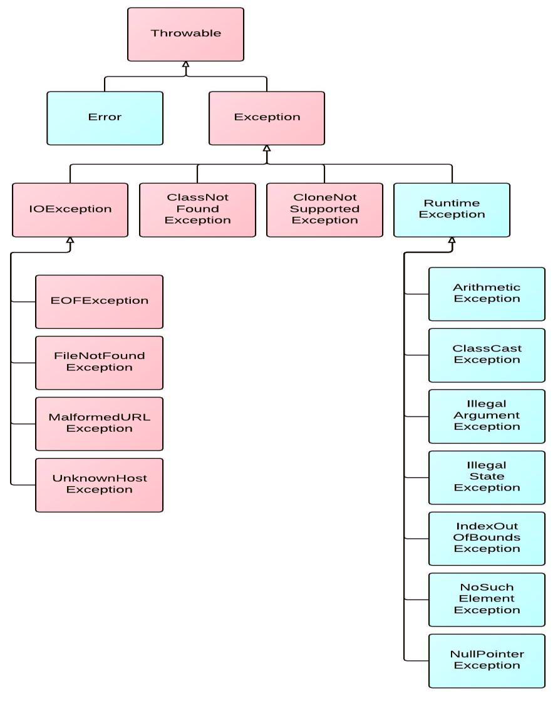

11. 异常¶
11.1. 异常概述¶
在
Java语言中，将程序执行中发生的不正常情况称为“异常”。(开发过程中的语法错误和逻辑错误不是异常)Java程序在执行过程中所发生的异常事件可分为两类：Error：Java虚拟机无法解决的严重问题。如：JVM系统内部错误、资源耗尽等严重情况。比如：StackOverflowError和OOM。一般不编写针对性的代码进行处理。Exception: 其它因编程错误或偶然的外在因素导致的一般性问题，可以使用针对性的代码进行处理。例如：空指针访问
试图读取不存在的文件
网络连接中断
数组角标越界
对于这些错误，一般有两种解决方法：一是遇到错误就终止程序的运行。另一种方法是由程序员在编写程序时，就考虑到错误的检测、错误消息的提示，以及错误的处理。
捕获错误最理想的是在编译期间，但有的错误只有在运行时才会发生。比如：除数为0，数组下标越界等
分类：编译时异常和运行时异常
11.2. 异常体系结构¶

* java.lang.Throwable
* |-----java.lang.Error:一般不编写针对性的代码进行处理。
* |-----java.lang.Exception:可以进行异常的处理
* |------编译时异常(checked)
* |-----IOException
* |-----FileNotFoundException
* |-----ClassNotFoundException
* |------运行时异常(unchecked,RuntimeException)
* |-----NullPointerException
* |-----ArrayIndexOutOfBoundsException
* |-----ClassCastException
* |-----NumberFormatException
* |-----InputMismatchException
* |-----ArithmeticException
java.lang.Throwable
java.lang.Error:一般不编写针对性的代码进行处理。java.lang.Exception:可以进行异常的处理编译时异常(checked)IOExceptionFileNotFoundException
ClassNotFoundException
运行时异常(unchecked,RuntimeException)NullPointerExceptionArrayIndexOutOfBoundsExceptionClassCastExceptionNumberFormatExceptionInputMismatchExceptionArithmeticException
11.3. 异常处理¶
11.3.1. java异常处理的抓抛模型¶
抛：程序在正常执行的过程中，一旦出现异常，就会在异常代码处生成一个对应异常类的对象。并将此对象抛出。一旦抛出对象以后，其后的代码就不再执行。
抓:可以理解为异常的处理方式：
try-catch-finallythrows
11.3.2. 异常处理方式¶
try-catch-finally结构
try{ //可能出现异常的代码 }catch(异常类型1 变量名1){ //处理异常的方式1 }catch(异常类型2 变量名2){ //处理异常的方式2 }... finally{ //一定会执行的代码 }
说明
finally是可选的。使用
try将可能出现异常代码包装起来，在执行过程中，一旦出现异常，就会生成一个对应异常类的对象，根据此对象的类型，去catch中进行匹配一旦
try中的异常对象匹配到某一个catch时，就进入catch中进行异常的处理。一旦处理完成，就跳出当前的try-catch结构（在没写finally的情况。继续执行其后的代码catch中的异常类型如果没子父类关系，则谁声明在上，谁声明在下无所谓。catch中的异常类型如果满足子父类关系，则要求子类一定声明在父类的上面。否则，报错常用的异常对象处理的方式：
String getMessage()printStackTrace()
在
try结构中声明的变量，再出了try结构以后，就不能再被调用try-catch-finally结构可以嵌套注意：
finally中声明的是一定会被执行的代码。即使catch中又出现异常了，try中return语句，catch中return语句等情况。
像数据库连接、输入输出流、网络编程
Socket等资源，JVM是不能自动的回收的，我们需要自己手动的进行资源的释放。此时的资源释放，就需要声明在finally中。
public class TryCatchFinally { // NumberFormatException @Test public void numberFormatException() { method(); } public int method(){ String str = "123"; str = "abc"; int num = 0; try { num = Integer.parseInt(str); return 1; }catch (NumberFormatException e){ e.printStackTrace(); return 2; }finally { System.out.println("一定会执行到我"); return 3; } } }
throws + 异常类型throws +异常类型写在方法的声明处。指明此方法执行时，可能会抛出的异常类型。一旦当方法体执行时，出现异常，仍会在异常代码处生成一个异常类的对象，此对象满足
throws后异常类型时，就会被抛出。异常代码后续的代码，就不再执行!try-catch-finally:真正的将异常给处理掉了。throws的方式只是将异常抛给了方法的调用者。并没有真正将异常处理掉。体会开发中应该如何选择两种处理方式？
如果父类中被重写的方法没
throws方式处理异常，则子类重写的方法也不能使用throws，意味着如果子类重写的方法中异常，必须使用try-catch-finally方式处理。执行的方法
a中，先后又调用了另外的几个方法，这几个方法是递进关系执行的。建议这几个方法使用throws的方式进行处理。而执行的方法a可以考虑使用try-catch-finally方式进行处理。
public class Throws { public static void main(String[] args) { try { method1(); } catch (IOException e) { e.printStackTrace(); } } public static void method() throws FileNotFoundException, IOException { File file = new File("hello.txt"); FileInputStream fis = new FileInputStream(file); int data = fis.read(); while (data != -1) { System.out.println((char) data); data = fis.read(); } fis.close(); } public static void method1() throws IOException { method(); } }
手动抛出异常对象
在程序执行中，除了自动抛出异常对象的情况之外，我们还可以手动的
throw一个异常类的对象。throw和throws区别：throw表示抛出一个异常类的对象，生成异常对象的过程。声明在方法体内。(更像动词)throws属于异常处理的一种方式，声明在方法的声明处。(更像形容词有异常的)
class Student{ private int id; public void regist(int id) throws Exception { if(id > 0){ this.id = id; }else{ //手动抛出异常对象 // throw new RuntimeException("您输入的数据非法！"); // throw new Exception("您输入的数据非法！"); throw new MyException("不能输入负数"); } } @Override public String toString() { return "Student [id=" + id + "]"; } }
11.3.3. 自定义一个异常类¶
如何自定义异常类？
继承于现的异常结构：
RuntimeException、Exception提供全局常量：
serialVersionUID提供重载的构造器
举例
public class MyException extends Exception{ static final long serialVersionUID = -7034897193246939L; public MyException(){ } public MyException(String msg){ super(msg); } }